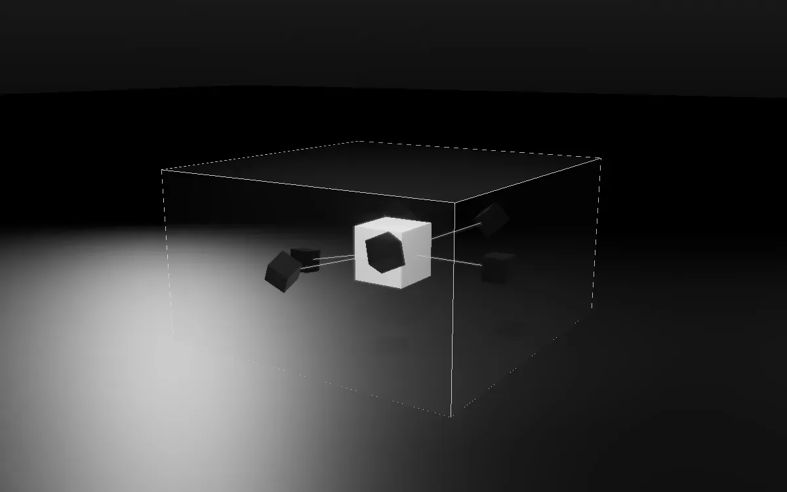

Agents are leaving the demo stage — governance is the new bottleneck.
Most companies now say they’re adopting AI agents, but few run them safely in production. The hard part isn’t the model — it’s oversight.
Through 2026, agentic AI went from buzzword to budget line. Deloitte’s 2026 State of AI in the Enterprise report finds that close to a quarter of companies already use agentic AI at least moderately — and warns that adoption is outpacing the governance meant to keep it in check.
Forrester’s read is blunter: many enterprises are chasing agents, but few are catching the value. Unclear ROI keeps projects in pilot mode, and a policy document alone can’t control a system that calls tools on its own.
For me this changes what “building an agent” means. The orchestration loop is the easy part; permissions, audit trails, fallbacks and human checkpoints are the real work. That’s why MindMesh is designed as specialised agents behind an orchestrator rather than one all-powerful loop.